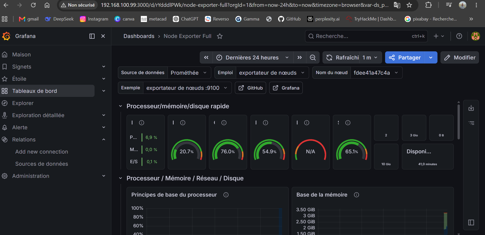
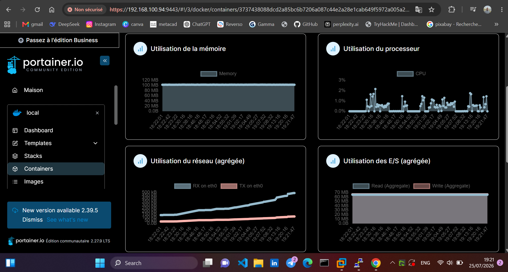
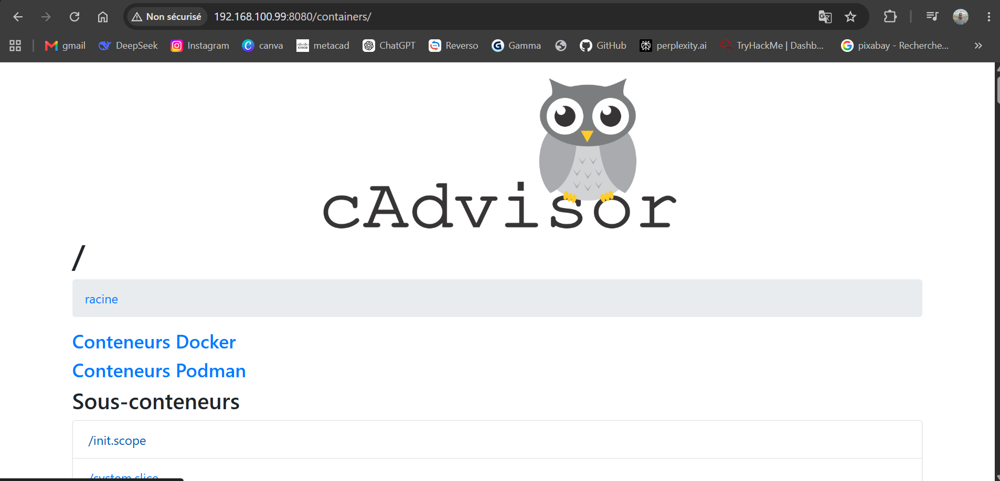

Grafana Monitoring Dashboard
Grafana is a monitoring and visualization platform
that I used to create dashboards for monitoring
servers and infrastructure.

Grafana monitoring dashboard
Technologies Used
- Grafana
- Prometheus
- Docker
- Ubuntu Server
- Node Exporter
Grafana allows monitoring data to be displayed
using dashboards, graphs and other visualizations.
Visit Grafana
Portainer Docker Management
Portainer is a graphical management platform
that I used to manage Docker containers,
images, networks and volumes.

Portainer Docker management interface
Technologies Used
- Portainer
- Docker
- Docker Compose
- Ubuntu Server
- Linux
Portainer provides a web interface that makes
it easier to manage Docker environments and
containers.
Visit Portainer
cAdvisor Container Monitoring
cAdvisor is a container monitoring tool used
to collect resource usage and performance
information from Docker containers.

cAdvisor container monitoring
Technologies Used
- cAdvisor
- Docker
- Prometheus
- Grafana
- Ubuntu Server
cAdvisor collects information about CPU,
memory, network and other resources used
by Docker containers.
View cAdvisor